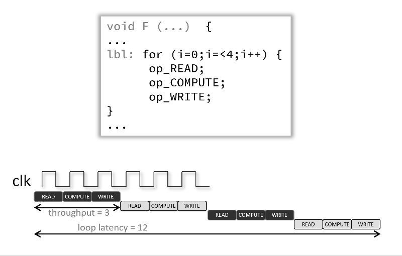

Vitis™ ハードウェア アクセラレーション チュートリアルxilinx.com の Vitis™ 開発環境を参照 |
モジュール 2 のコード、ファイル、および手順 (モジュール 1 と同じ手順 で Vitis ツールを設定および実行)
このモジュールの内容:
1. スループットのパイプライン処理
2.PIPELINEの一般的な説明
3.INTERFACEプラグマ入門
このモジュールでは、pipeline プラグマに焦点を当て、次について説明します。プラグマの付いたループを含むカーネル ソース コードは、モジュール 1 と同じ結果を生成します。これは、単純なループと内部ループ (入れ子のループ) がツールで自動的にパイプライン処理されるためです。このバージョンでは、interface プラグマも追加され、カーネルの C ポートの接続と設定を明確に記述します。
スループットのパイプライン処理¶
デフォルトでは、高位合成は非常に保守的です。たとえば、ループ本体の命令は、交互方式で実行されるのではなく、反復ごとに全体が実行されます。この後者の実行方式は、明示的に PIPELINE プラグマでイネーブルになり、異なる操作を並列実行を可能にすることで、関数またはループの開始間隔 (II) を減らします (このチュートリアルでは、ループに適用します)。これで、パイプライン処理された関数またはループが、N クロック サイクルごとに新しい入力を処理できます。N はループまたは関数の II です。PIPELINE プラグマのデフォルトの II は 1 で、クロック サイクルごとに 1 つの入力を処理します。開始間隔は、II オプションを使用しても指定できます。
ループをパイプライン処理すると、次のアニメーションのように、これらの操作が同時に実行されるように操作をインプリメントできます。この例およびデフォルトでは、各入力読み出し間に 3 クロック サイクルあり (つまり、II = 3)、プラグマが使用されると、ループを完全に実行するには、6 クロック サイクルではなく 12 クロック サイクル必要です。

Vitis HLS (高位合成) ツールではユーザーが指定した開始間隔 (II) でデザインを作成できない場合は、警告メッセージが表示され、最短の達成可能な II でデザインが作成されます。警告メッセージを参考にデザインを解析し、必要な開始間隔を満たしてデザインを作成するためにどの手順が必要なのかを判断します。
プラグマを C ソースでイネーブルにするには、その関数の本体またはループ内に挿入します。
#pragma HLS pipeline II=<int> enable_flush rewindII=int は、パイプラインの各開始間隔間に必要なクロック サイクル数を指定します。HLS ツールでこの指定を満たすよう試みられますが、データ依存性によって実際の開始間隔 (II) がこれより大きくなる場合があります。enable_flush 修飾子はオプションであり、パイプラインの入力で有効なデータが非アクティブになった場合に、データを押し出し続けます。rewind もオプションで、1 つのループ反復の終了と次の反復の開始の間に一時停止のない連続ループ パイプライン処理 (巻き戻し) をイネーブルにします。巻き戻しは、最上位関数内に 1 つのループしかない (完全なループ ネスト) 場合にのみ効果的です。
次の例では関数 foo が開始間隔 1 でパイプライン処理fされます。
void foo { a, b, c, d} { #pragma HLS pipeline II=1 ... }カーネルのソース コードを見てください。コード内の複数のループに PIPELINE 指示子がどのように適用されるかが確認できます。Vitis HLS では最も内側のループが自動的にパイプライン処理されるため、結果は前のモジュール (ベースライン) とは異なりません。
INTERFACE プラグマ¶
INTERFACE プラグマでは、カーネル C ポートの物理アダプターと、HLS で「インターフェイス合成」と呼ばれる処理中のプラットフォームへの接続方法を指定します。
これらの物理アダプターとそれに関連する RTL インプリメンテーションは、次から派生します。
指定されている任意の関数レベルのプロトコル: 関数レベルのプロトコルは、ブロック レベルの I/O プロトコルとも呼ばれ、関数の演算が開始したときに制御する信号と、関数の演算が終了したこと、アイドル状態であること、新しい入力を受信できる状態であることを通知する信号を提供します。関数レベルのプロトコルのインプリメンテーションは、ap_ctrl_none、ap_ctrl_hs または ap_ctrl_chain の <mode> 値で指定されます。デフォルトはブロック レベルの I/O プロトコル、ap_ctrl_hs です。関数名に関連付けられています。
関数引数: 各関数引数は、有効ハンドシェイク (ap_vld) や肯定応答ハンドシェイク (ap_ack) などの独自のポート レベル (I/O) インターフェイス プロトコルを持つように指定できます。ポート レベル インターフェイス プロトコルは、最上位関数の各引数および関数の戻り値 (関数が値を返す場合) に対して作成されます。作成されるデフォルトの I/O プロトコルは、C 引数のタイプによって異なります。ブロック レベルのプロトコルが使用されてブロックの演算が開始したら、ポート レベルの I/O プロトコルを使用して、データをブロック内外に順に送信できます。
最上位関数によりアクセスされ、スコープ外部で定義されるグローバル変数:
グローバル変数がアクセスされても、すべての読み出しおよび書き込みが関数のローカルである場合は、リソースは RTL 内に作成されます。RTL に I/O ポートは必要ありません。グローバル変数が外部ソースまたはデスティネーションである場合は、インターフェイスは標準関数引数と同様の方法で指定します。次の例を参照してください。
INTERFACE プラグマがサブ関数に使用されている場合は、レジスタ オプションのみを使用できます。<mode> オプションは、サブ関数ではサポートされません。
ヒント: サブ関数で使用される I/O プロトコルは Vivado 高位合成 (HLS) ツールにより自動的に決定されます。ポートにレジスタを付けるかどうかを指定することを除き、これらのポートを制御することはできません。
バースト モードの指定
構文セクションに説明されているように max_read_burst_length または max_write_burst_length オプションを使用してインターフェイスのバースト モードを指定する場合は、AXI 規格に関連する制限と考慮事項があります。
ARLEN および AWLEN は 8 ビットで、実際のバースト長は AxLEN+1 なので、トランザクションごとのバースト長は 256 ワード以下にする必要があります。バースト トランザクションごとに転送される量は合計 4 KB 未満です。4 KB アドレス境界を超えないようにしてください。バス幅は、32 ～ 512 ビットの間の 2 のべき乗数 (32、64、128、256、512 ビット) または 4、8、16、32、64 バイトに指定します。
4 KB の制限があるので、1 つのバス幅の単一トランザクションの最大バースト長は次のようになります。
32 ビットは 256 ワードで、トランザクションごとに転送される合計バイト数は 1024 です。
64 ビットは 256 ワードで、トランザクションごとに転送される合計バイト数は 2048 です。
128 ビットは 256 ワードで、トランザクションごとに転送される合計バイト数は 4096 です。
256 ビットは 128 ワードで、トランザクションごとに転送される合計バイト数は 4096 です。
512 ビットは 64 ワードで、トランザクションごとに転送される合計バイト数は 4096 です。
注記: 実際のトランザクションはデザインによって異なります。たとえば、max_read_burst_length または max_write_burst_length を 128 に設定している場合、100 回反復される for ループからのパイプライン アクセスでは最大バースト長は達成されません。ただし、アクセスが指定された最大バースト長よりも長い場合、アクセスは小さいバーストに分割されます。
たとえば、100 回アクセスされるパイプライン for ループで max_read_burst_length または max_write_burst_length が 64 に設定される場合、最大バースト長 (または 64) のトランザクションと残りのデータのトランザクション (36 ワードのバースト) に分割されます。